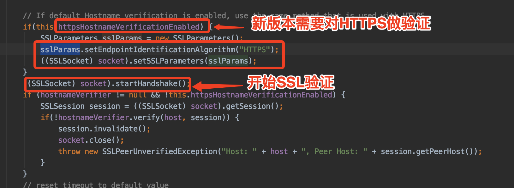

首先说一下为什么要写这篇文章呢，在我发现网上对MQTT的文章介绍实在太少了，可能也是使用这个的频率比较低吧！还有对问题的定位以及解决的方式和办法也太少了，所以特意写这篇文章希望能作出一些贡献，帮助到一些需要的人。
主要记录一下MQTT在原先1.2.0版本使用过程中出现的问题，排查问题到升级1.2.1版本过程中出现的问题，通过源码一步步排查出最后的问题点，直到符合预期目标。
<!-- https://mvnrepository.com/artifact/org.eclipse.paho/org.eclipse.paho.client.mqttv3 -->
<dependency>
<groupId>org.eclipse.paho</groupId>
<artifactId>org.eclipse.paho.client.mqttv3</artifactId>
<version>1.2.1</version>
</dependency>MQTT的搭建及SSL认证可以参考这个博客：https://www.cnblogs.com/yueli/p/7490453.html 在这不仔细阐述
在开头先了解一下Qos的一些含义，也是这个问题为导火线
发布者PUBLISH消息到服务器（broker），发送即丢弃。没有确认消息，也不知道对方是否收到。网络层面，传输压力小
发布者发布消息保存消息，服务器（broker）接收到消息，服务器（broker）PUBLISH到订阅者，服务器（broker）回一个PUBACK信息到发布者让删除消息，然后订阅者接收消息后PUBACK给服务器让删除消息。如果失败了，在一段时间确认信息没有收到，发送方都会将消息头的DUP设置为1，然后再次发送消息，消息最少一次到达服务。例如网络延迟等问题，发布者重复发送消息，订阅者多次订阅重复消息
其实Qos = 2 只是在 1 的基础上做了改掉的赶脚，在发布者PUBLISH到服务器之后多了消息的确认以及多了消息msgID的缓存，重复信息的去重。在服务器PUBLISH到订阅者之后也多了消息的确认。
0 没有保存message，没有重发机制，啥事也不知道，1和2 的发布者和服务器有保存message，发布者有重发机制，服务器都有PUBLISH之后的PUBACK的确认机制，但是2的服务器多了缓存msgID的一项功能，提供了去重功能，防止了消息的重复发送，以及消息的接收的确认机制。订阅者这边不过多的介绍，感兴趣再去了解。
问题的描述：因为项目中使用MQTT通信的地方比较多，一般都是以Qos = 0 的形式，这段时间发现会时常提醒报错Too many publishes in progress (32202)，看了一下源码报错地方
从这里可以判定actualInFlight超出自己设置的maxInflight最大值导致的，尝试加大maxInflight也无用，只是延迟报错的时间而已
首先上网搜一下是否有类似问题出现，果不其然有个哥们碰到了，博客地址：https://blog.csdn.net/lblblblblzdx/article/details/81159478 此文章给我很大帮助，感谢博主，但是最后的解决方案不是很好。
跟踪发布过程的源码逻辑
第一步：publish的过程
//1
public IMqttDeliveryToken publish(String topic, MqttMessage message, Object userContext,IMqttActionListener callback)
//2
public void sendNoWait(MqttWireMessage message, MqttToken token)
//3
void internalSend(MqttWireMessage message, MqttToken token)
//4
public void send(MqttWireMessage message, MqttToken token) 第二步：所有Qos类型，在publish消息的顶级父类中的构造器默认设置msgId = 0
第三步：消息在send方法中做了主要处理
第四步：根据上面的Qos的介绍，说明我们publish的消息在这个地方全部都缓存在tokens这里，其实就是放入Hashtable中，不管什么等级的Qos
在这几个步骤中，已经缓存好信息，准备异步发送，其中的lock机制就不多去解释
第五步：异步发送，其实主要是在客户端链接完成的时候就已经开始监听了，connect流程
1 //1
2 public IMqttToken connect(MqttConnectOptions options)
3
4 //2 异步链接
5 ConnectActionListener connectActionListener = new ConnectActionListener(this, persistence, comms, options,userToken,userContext, callback, reconnecting);
6 connectActionListener.connect();
7
8 //3 客户端的通信链接，包括发送和接收
9 ClientComms.connect(options, token);
10
11 //4 个人理解是 将通信信息塞进线程池中，分别开启发送和接收的线程处理
12 ConnectBG conbg = new ConnectBG(this, token, connect, executorService);
13 conbg.start();
第六步：在ConnectBG的run中 new CommsSender. start线程run中while循环发送的信息流程，一直发送消息中
第七步：在notifySent的方法中判断Qos = 0 的作出了判断及操作
这些差不多就是发布过程的主题流程结构，了解这些才会知道让你解决问题更加的容易
在上面的第六步的图中黄色箭头指出了问题出现的点，主要是在大数据量高并发的时候，因为在Qos = 0 的时候，在tokens（Hashtable）中的key一直是0，默认初始化。后面的流程中并没有改变过，在黄色那块tokenStore.getToken 在发送之后才remove数据，但是多条数据高并发的时候，在remove数据之后，后一条在get的时候会出现空的状况，不发送信息，导致actualInFlight没有减，一直增加，一定时间后就会超出最大值。Qos =1 、2 是不会发送这样的情况，因为他们的messageId是唯一的。
既然说了第一种解决办法不是很赞同，那就直接进去第二种办法吧。升级到1.2.1版，时间：Feb, 2019，但是在升级版本的时候又出现了一些问题，因为改动还是有点多的。
接下来说说1.2.1版本的改动了什么呢
首先主要改动的是在Qos = 0 的不放入tokens中了，首先想到的是不会get到了，也不用担心重复了，直接从集合pendingMessages中拿
然后从信息的自身获取数据的token，获取不到再去tokens中拿
以上两个就是主要解决这个高并发冲突的原因
为什么这么说呢，在我们开发的意识中，升级版本怎么也要向下兼容吧，那就顺其自然的换个版本就完事了，结果一跑起来，一堆红色的出现，那心情···我太南了。以我的性子，就是不能惯着她，继续深挖为什么，既然坑已经有了，就不怕有多深。
第一时间也是上网搜一些为啥，大家的解决也差不多，都是SSL验证出现问题，但是解决方案也是五花八门
第一种：设置系统属性 类似这样的文章 https://blog.csdn.net/hxpjava1/article/details/77937026
第二种：有看了一些代码了，就是重写X509TrustManagerImpl，绕过SSL的验证，试过有用，类似这样的文章 https://blog.csdn.net/iverson_AL/article/details/100669777
第三种：再深入看一些源码，你会看到会什么会报错，为什么会验证，主要是你的属性没有设置好，采用了默认验证导致
这里主要说一下解决的过程，如何从这些网络文章种找出适合自己的出路。
首先 第一种我就不咋喜欢，动不动就设置了系统全局属性，第二种方案，有两种可能性，一是这个api真的有问题或是不符合自己的项目需要重写代码逻辑结构，二是在不了解的情况下直接绕过验证。我在测试第二个的时候就是如此只是稍微看了一下源码，没有深入看进去，试了一下，果真可以实现我想要目的。
但是过后又想了一下，不该如此，既然开源出来的东西，不可能如此**，应该会有什么地方可以简单设置一下的。既然有这个想法就一直深入探究下去，果不其然，真相出来了。
在1.2.1版本中MqttConnectOptions 的httpsHostnameVerificationEnabled属性默认true，导致不是Https的被验证不通过导致的，也可能MQTT开发人员安全意识很强，在1.2.0版本中没有这个概念存在，所以在版本升级的时候需要加上MqttConnectOptions.setHttpsHostnameVerificationEnabled(false);
以下源码查看的过程

若是有Https证书是不会有问题的。
其实很简单的问题，居然整的时候那么复杂，原因是我们不够强，面对源码的时候还是比较害怕的，还有比较懒吧。
整个过程比较繁琐，啰嗦吧，耐心看下来，应该有收获。
操作总结：
转载请注明出处 https://www.cnblogs.com/zhouguanglin/p/11986446.html